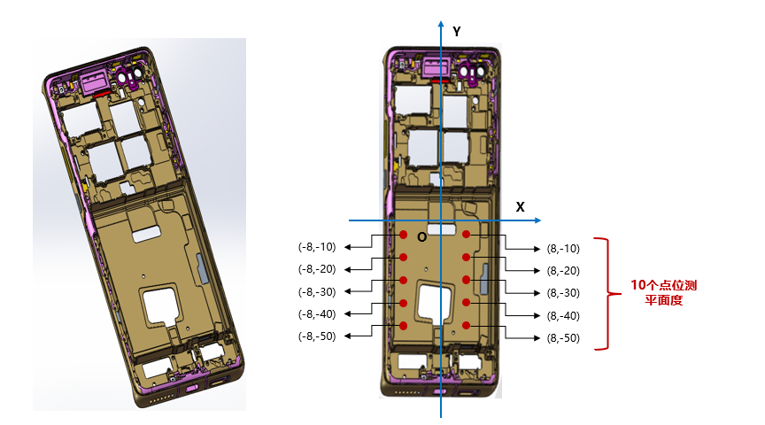
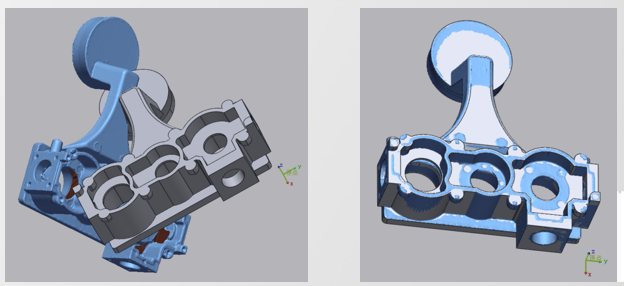
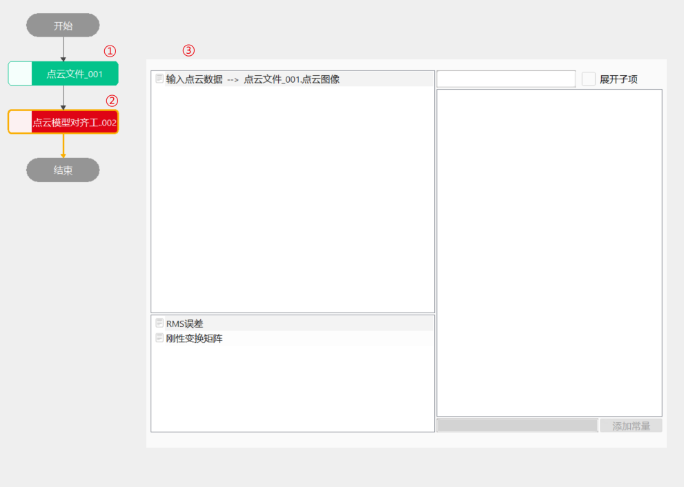
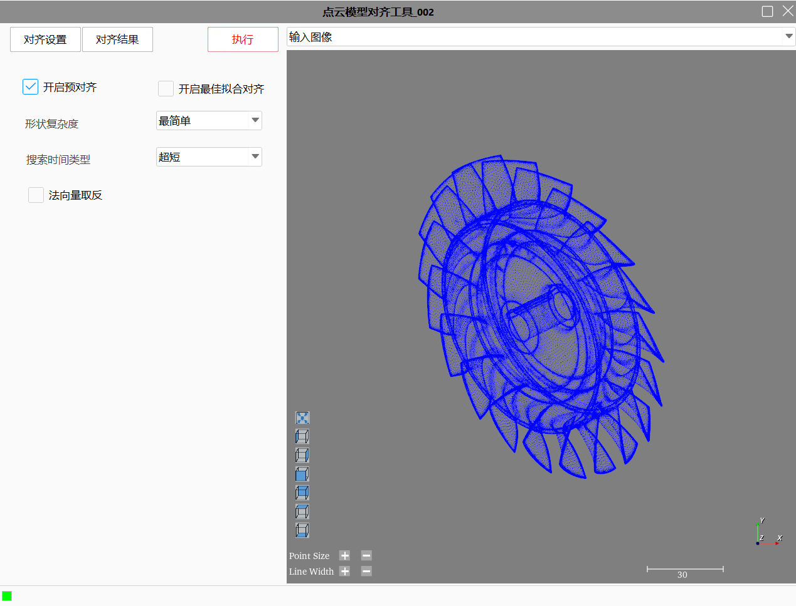
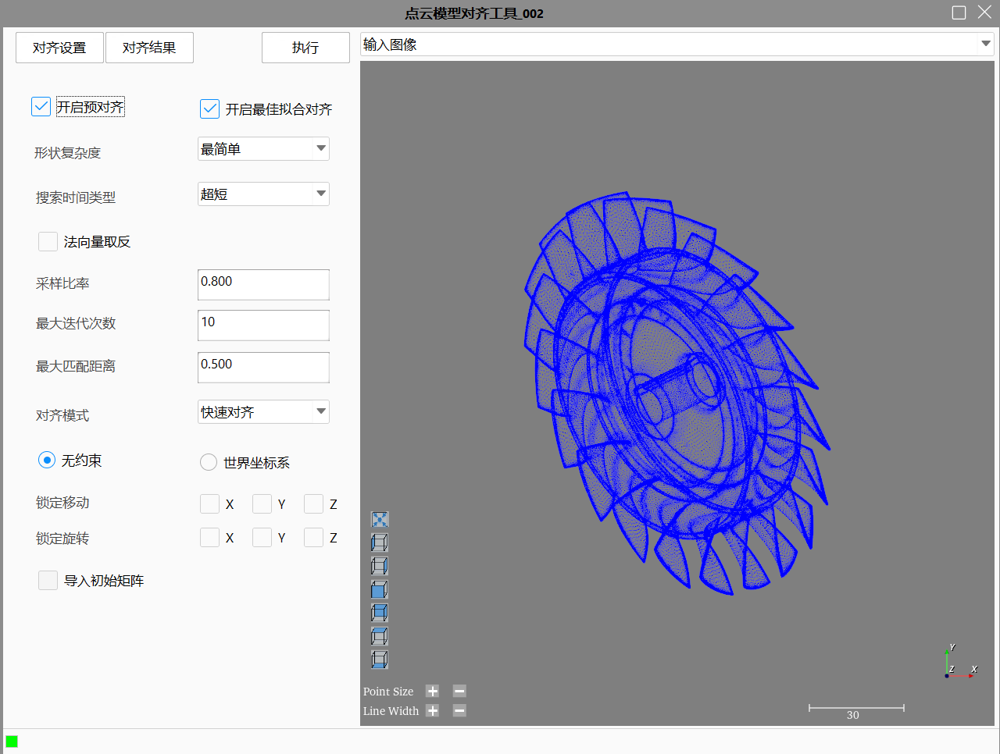
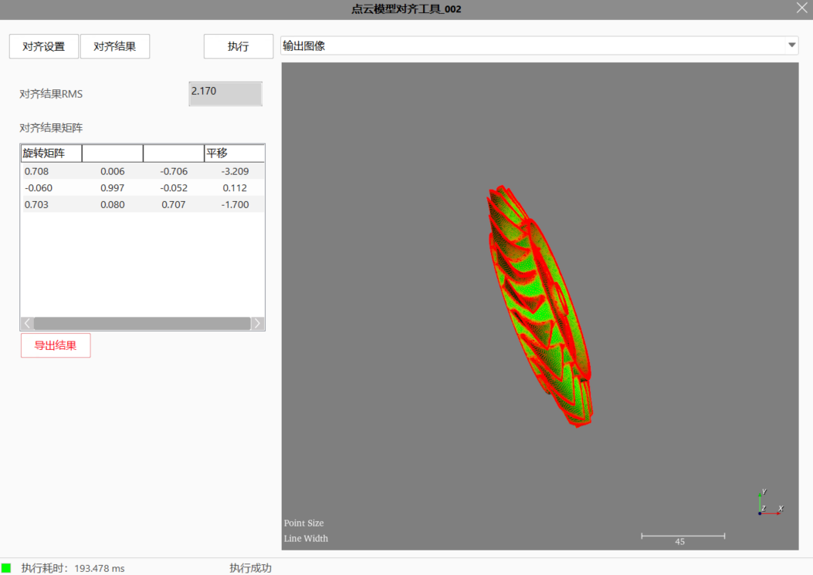

Công cụ căn chỉnh mô hình đám mây điểm hoàn thành căn chỉnh nhanh dựa trên mô hình CAD（định dạng stl）và đặc trưng hình học trong dữ liệu đám mây điểm, thiết lập hệ tọa độ chuẩn, nhằm hỗ trợ các tác vụ đo lường và kiểm tra 3D tiếp theo.
Các tình huống ứng dụng điển hình như：kiểm tra thông số kích thước linh kiện điện thoại, kiểm tra độ biên dạng bề mặt cong sản phẩm. Thực hiện kiểm tra chất lượng thông số kích thước của phôi trong hệ tọa độ chuẩn, hoàn thành các tác vụ đo lường và kiểm tra 3D.





1、Quy trình thiết lập căn chỉnh sơ bộ：tải mô hình→huấn luyện mô hình→thực thi matching.
（1）Nhấp “Tải mô hình”：sẽ bật cửa sổ mở file, chọn file STL cục bộ；
（2）Nhấp “Huấn luyện mô hình”：tiến hành huấn luyện；
（3）Trả về kết quả matching tương ứng theo các tham số đã thiết lập.
2、Quy trình thiết lập căn chỉnh best-fit：tải mô hình→thiết lập tham số→thực thi matching.
（1）Nhấp “Tải mô hình”：sẽ bật cửa sổ mở file, chọn file STL cục bộ；
（2）Thiết lập tham số：thiết lập tham số công cụ, ràng buộc và ma trận ban đầu；
（3）Trả về kết quả matching tương ứng theo các tham số đã thiết lập.
Sau khi thực thi thành công, có thể xuất ma trận kết quả căn chỉnh ra cục bộ, kết quả căn chỉnh như Hình 3_4.

| Tên tham số | Mô tả tham số |
|---|---|
| Dữ liệu đám mây điểm đầu vào | Nhập ảnh đám mây điểm cần căn chỉnh mô hình |
| Tên tham số | Mô tả tham số |
|---|---|
| Đường dẫn file mô hình | Tải đường dẫn file mô hình |
| Bật căn chỉnh sơ bộ | Có bật chức năng căn chỉnh sơ bộ hay không |
Tham số giao diện nâng cao nhất quán với tham số cửa sổ thuộc tính.
| Tên tham số | Mô tả tham số |
|---|---|
| Sai số RMS | Sai số matching sau khi thực thi căn chỉnh mô hình |
| Ma trận biến đổi cứng | Kết quả ma trận xoay và tịnh tiến khi thực thi căn chỉnh mô hình |
| Dữ liệu đám mây điểm đầu ra | Dữ liệu đám mây điểm dùng làm đầu vào cho các công cụ khác |
| Tên tham số | Mô tả tham số |
|---|---|
| Sai số RMS | Sai số matching sau khi thực thi căn chỉnh mô hình |
| Ma trận biến đổi cứng | Kết quả ma trận xoay và tịnh tiến khi thực thi căn chỉnh mô hình |
| Dữ liệu đám mây điểm đầu ra | Dữ liệu đám mây điểm đầu ra sau khi căn chỉnh mô hình |
| Kết quả thực thi | Kết quả thực thi công cụ |
| Thời gian thực thi | Thời gian thực thi công cụ |
Tham khảo “\Samples\3D\点云\点云模型对齐工具.gvp”。
a、 Độ phức tạp hình dạng：dùng để chỉ định mức độ tinh chỉnh khi huấn luyện mô hình, được chia thành：đơn giản nhất（giá trị mặc định）, đơn giản, thông thường, phức tạp, phức tạp nhất. Trong trường hợp thông thường, đơn giản nhất và đơn giản phù hợp với các tình huống mô hình có cấu trúc hình dạng rõ ràng, thông thường có thể phù hợp với mô hình dẹt và thuôn dài, phức tạp và phức tạp nhất có thể áp dụng cho mô hình đối xứng quay；
b、 Thời gian tìm kiếm：trong quá trình matching mục tiêu, dùng để chỉ định thời gian tính toán căn chỉnh ước lượng có thể duy trì, được chia thành：cực ngắn（giá trị mặc định）, ngắn, bình thường, dài, cực dài. Trong trường hợp thông thường, cực ngắn và ngắn phù hợp với các linh kiện thông thường có cấu trúc rõ ràng, bình thường có thể phù hợp với mục tiêu có đặc trưng phẳng, dài và cực dài có thể áp dụng cho vật thể đối xứng quay；
c、 Có đảo hướng vector pháp tuyến của đám mây điểm hay không：chỉ định có hiệu chỉnh hướng pháp tuyến của đám mây điểm mục tiêu hay không, nếu bật, trong quá trình matching mục tiêu, hướng pháp tuyến của nó sẽ bị đảo ngược, mặc định không bật tham số này；
d、 Có thực hiện căn chỉnh best-fit hay không：sau khi matching nhanh mục tiêu, có thể thiết lập có thực hiện một lần căn chỉnh best-fit hay không để nâng cao độ chính xác matching, mặc định bật tham số này；
e、Điều kiện ràng buộc：điều kiện ràng buộc là các ràng buộc đối với từng bậc tự do trong quá trình căn chỉnh, nếu khóa xoay trục x, thì trong quá trình căn chỉnh sẽ không xét đến biến đổi xoay quanh trục x.